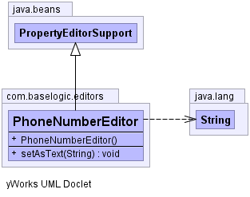

com.baselogic.editors
Class PhoneNumberEditor
java.lang.Object
 java.beans.PropertyEditorSupport
com.baselogic.editors.PhoneNumberEditor
java.beans.PropertyEditorSupport
com.baselogic.editors.PhoneNumberEditor
- All Implemented Interfaces:
- PropertyEditor
public class PhoneNumberEditor
- extends PropertyEditorSupport
PhoneNumberEditor
Spring Certification objective: 1.2 Lifecycle
- Since:
- 2012
- Author:
- Mick Knutson
- See Also:
- Objective 1.2 Lifecycle,
Blog: http://baselogic.com,
LinkedIN: http://linkedin.com/in/mickknutson,
Twitter: http://twitter.com/mickknutson,
Git hub: http://github.com/mickknutson,
JavaEE 7 Cookbook Packt,
JavaEE 7 Cookbook Amazon
-
-

| Methods inherited from class java.beans.PropertyEditorSupport |
addPropertyChangeListener, firePropertyChange, getAsText, getCustomEditor, getJavaInitializationString, getSource, getTags, getValue, isPaintable, paintValue, removePropertyChangeListener, setSource, setValue, supportsCustomEditor |
| Methods inherited from class java.lang.Object |
clone, equals, finalize, getClass, hashCode, notify, notifyAll, toString, wait, wait, wait |
PhoneNumberEditor
public PhoneNumberEditor()
setAsText
public void setAsText(String text)
throws IllegalArgumentException
- Specified by:
setAsText in interface PropertyEditor- Overrides:
setAsText in class PropertyEditorSupport
- Throws:
IllegalArgumentException
true